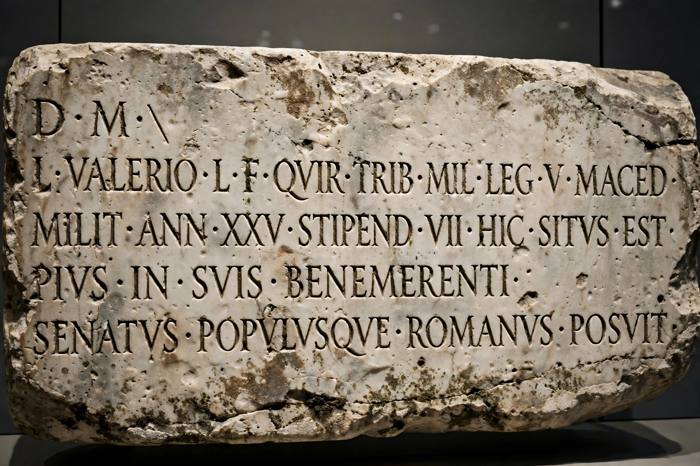

Old Latin
| Old Latin | |
| Native to | Roman Kingdom and Roman Republic |
|---|---|
| Region | Latium, Italian Peninsula |
| Era | Attested from c. 7th century BC; developed into Classical Latin by 75 BC |
| Language family | Indo-European > Italic > Latino-Faliscan > Latin |
| Writing system | Old Italic script, Latin alphabet |
| Language codes | ISO 639-1: la |

Old Latin, also known as Early Latin or Archaic Latin, refers to the form of the Latin language used from the earliest surviving written records in the 7th century BC until the period sometimes called the "Golden Age of Latin literature" beginning around 75 BC, when the language had developed into Classical Latin.
History
Latin was originally the local language of the Latins, the people of Latium and the city of Rome. Its earliest attestations include the Lapis Niger inscription from the Forum, the Duenos inscription, and the Praeneste fibula, a gold brooch dated to the 7th century BC whose authenticity has been debated but is now widely accepted.
During the Roman Republic Latin spread throughout Italy and eventually the western Mediterranean as Rome's political power grew. The literary Latin of Plautus and Terence, written around 200 BC, already differs markedly from the language of the Twelve Tables (c. 450 BC).
Differences from Classical Latin
Old Latin differs from Classical Latin in vocabulary, morphology and spelling. Examples include the retention of the diphthongs oi and ei (later monophthongised), endings such as nominative plural -es for -i, genitive singular -os or -as instead of -i and -ae, and future forms in -bo alternating with other formations. Many words known from classical texts appear in earlier forms, e.g. duenos "good" for classical bonus.
Surviving texts
Surviving Old Latin texts include laws such as the Twelve Tables, inscriptions including the Senatus consultum de Bacchanalibus (186 BC), fragments of early epic and tragedy, and the comedies of Plautus and Terence, which are usually classified with the following "Golden Age" period but preserve many archaic features.